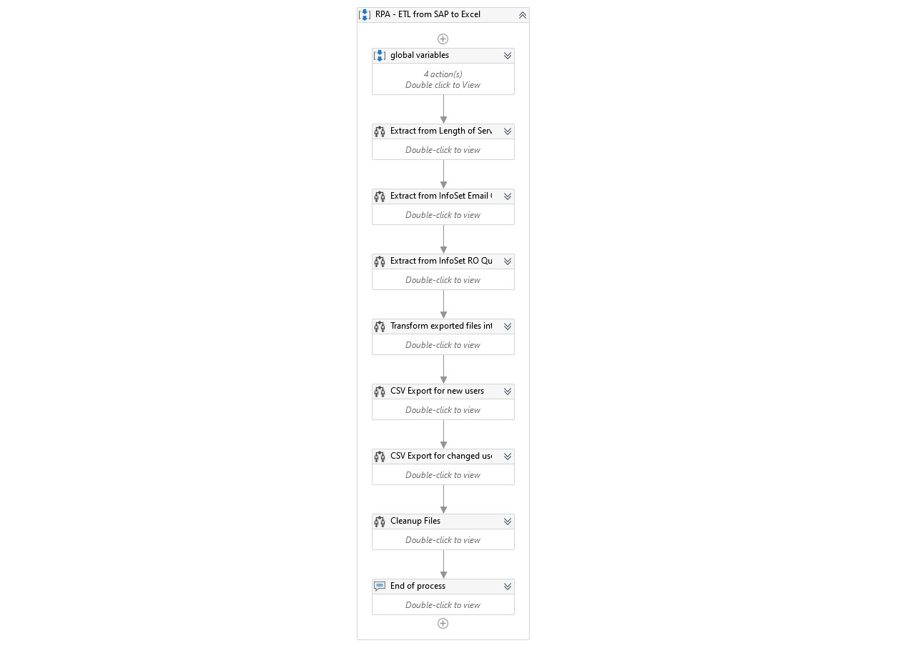
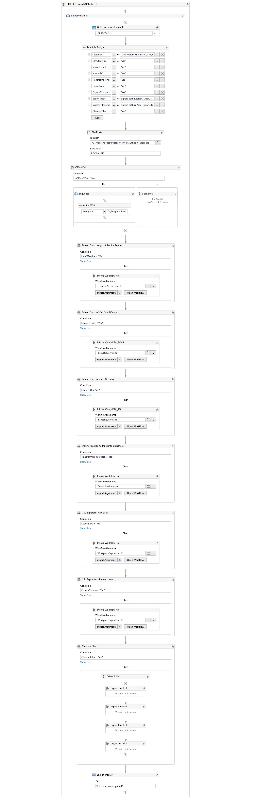
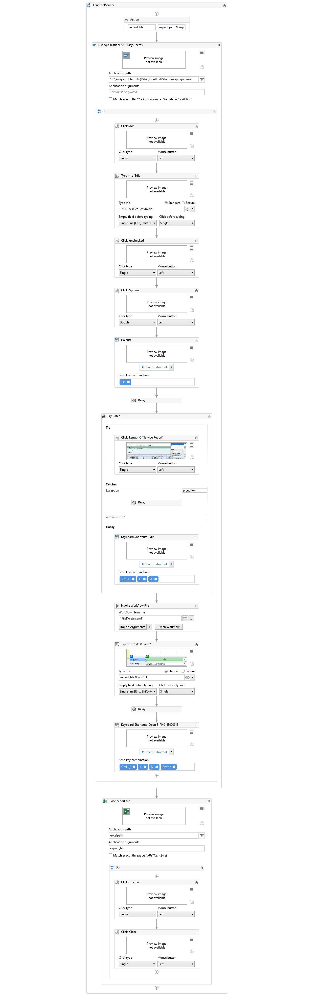
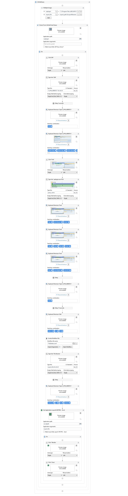
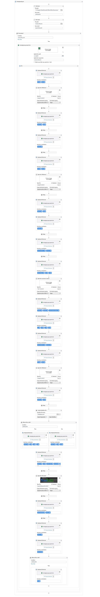
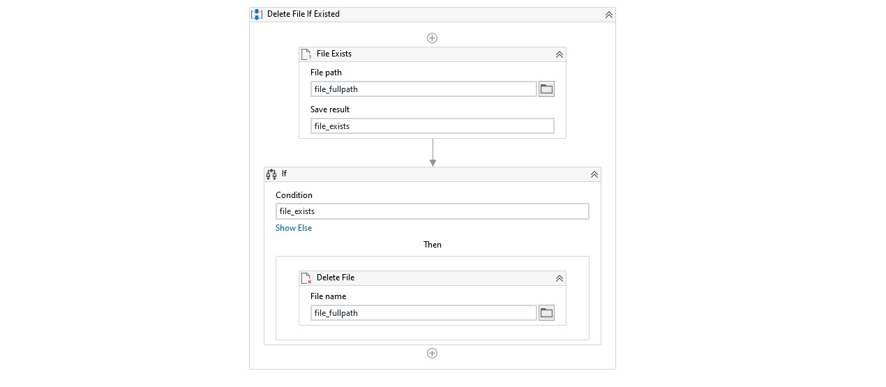

NHGP SAP HRIS to Faceook Workplace Export
Using UiPath to extract SAP reports and transform into excel worksheet for consolidation.
Workflow in UiPath for SAP reports extract,transform,loading process
Summary - High Level Workflow

Detail Workflow - Main

Detail Workflow - Length-of-Service

Detail Workflow - InfoSet-Query RPA_EMAIL / RPA_RO

Detail Workflow - Facebook Workplace Export

Functional Workflow - File Deletion
